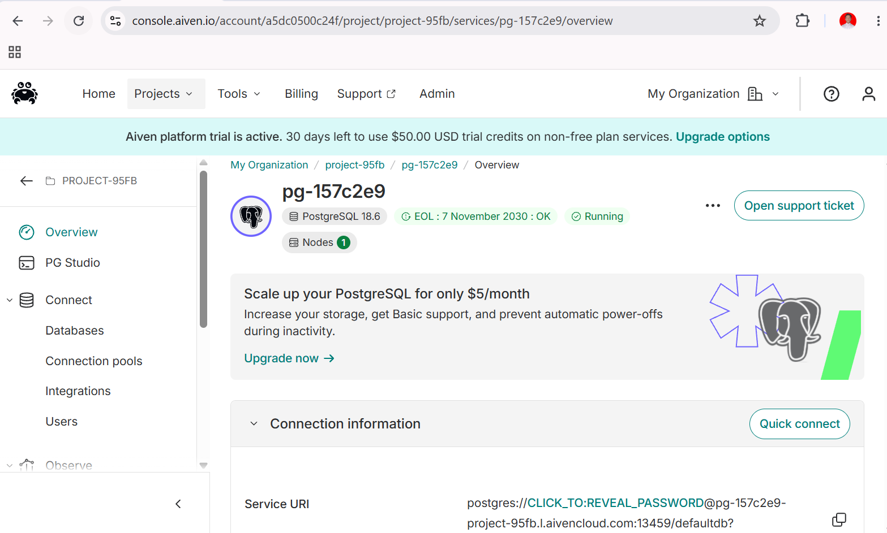
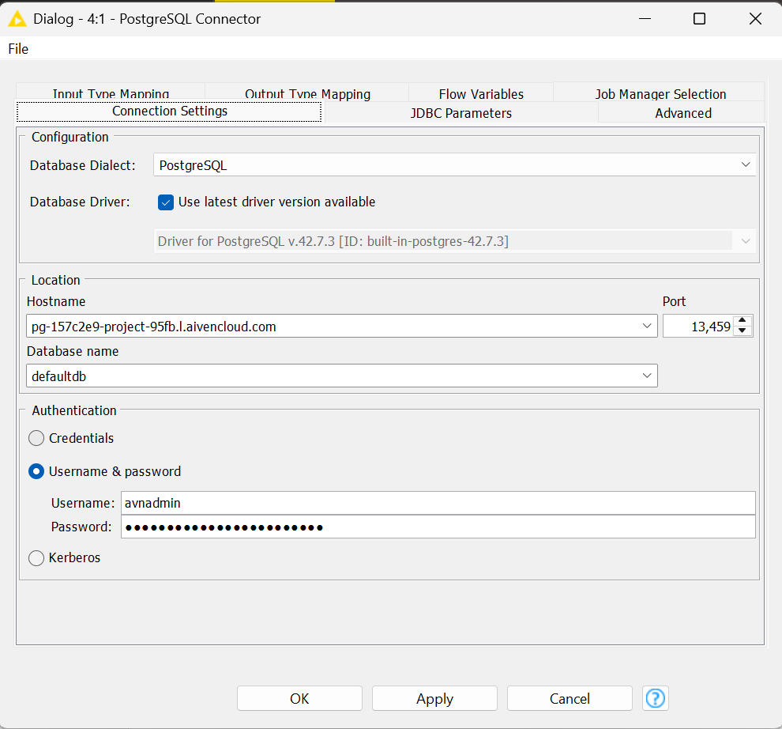

Analisis Data Polutan Gresik#
Dataset: Polutan_Gresik_Terkini.csv
Periode: 2025-09-01 s.d. 2026-08-30 (363 baris data harian)
Variabel: NO2, CO, SO2, O3 (konsentrasi harian gas polutan)
Memindahkan Data Time Series ke PostgreSQL (Aiven)#
Langkah 1: Mengambil Kredensial Database dari Aiven#
Sebelum menyambungkan koneksi melalui aplikasi apa pun, kita membutuhkan informasi kredensial server.
Akses dashboard atau console Aiven, lalu arahkan ke proyek yang dimiliki.
Buka tab Overview pada layanan (service) PostgreSQL yang sedang beroperasi (
pg-157c2e9).Pada bagian Connection information, catat parameter-parameter berikut ini:
Host:
pg-157c2e9-project-95fb.l.aivencloud.comPort:
13459User:
avnadminPassword: (Klik ikon mata atau opsi copy untuk menyalin kata sandi rahasia)
SSL mode:
require
Pastikan Anda telah mengunduh sertifikat SSL (klik Show pada bagian CA certificate kemudian unduh) apabila client yang Anda gunakan mensyaratkannya.

Langkah 2: koneksi ke knime#

…
Bagian 3 — Penjelasan Setiap Fitur pada Node Statistics: Rumus & Contoh Perhitungan Manual#
Contoh perhitungan manual di bawah ini menggunakan kolom CO (n valid = 275, dari total 363 baris dikurangi 88 missing).
1. Min & Max#
Penjelasan: Nilai observasi terendah (Min) dan tertinggi (Max) dalam data — menunjukkan rentang sebaran nilai.
Rumus: $\(Min = X_1 \qquad Max = X_n\)$ (setelah data diurutkan dari terkecil ke terbesar)
Contoh (CO): Setelah 275 nilai CO valid diurutkan,
$\(Min_{CO} = 0.021424 \qquad Max_{CO} = 0.042927\)$
2. Mean#
Penjelasan: Nilai rata-rata; dihitung dengan menjumlahkan seluruh observasi valid lalu dibagi jumlah observasi tersebut.
Rumus: $\(\bar{x} = \frac{\sum_{i=1}^{n} x_i}{n}\)$
Contoh (CO): $\(n = 363 - 88 = 275\)\( \)\(\bar{x}_{CO} = \frac{8.042181}{275} = 0.029244\)$
3. Std. Deviation#
Penjelasan: Mengukur rata-rata simpangan data terhadap Mean. Nilai rendah → data konsisten/mengelompok; nilai tinggi → fluktuasi lebar.
Rumus (Sampel): $\(s = \sqrt{\frac{\sum_{i=1}^{n} (x_i - \bar{x})^2}{n-1}}\)$
Contoh (CO): $\(\sum_{i=1}^{n}(x_i - \bar{x})^2 = 0.0028790691\)\( \)\(s_{CO} = \sqrt{\frac{0.0028790691}{275-1}} = \sqrt{\frac{0.0028790691}{274}} = 0.003242\)$
4. Variance#
Penjelasan: Rata-rata kuadrat selisih tiap titik data terhadap Mean; secara matematis adalah kuadrat dari Std. Deviation.
Rumus (Sampel): $\(s^2 = \frac{\sum_{i=1}^{n} (x_i - \bar{x})^2}{n-1}\)$
Contoh (CO): $\(s^2_{CO} = (0.003242)^2 = 1.0508 \times 10^{-5}\)$
5. Skewness#
Penjelasan: Mengukur asimetri distribusi terhadap rata-rata.
Skewness = 0: distribusi simetris.
Skewness > 0: ekor memanjang ke kanan (nilai ekstrem tinggi) — contoh pada dataset ini:
NO2(1.849).Skewness < 0: ekor memanjang ke kiri — contoh:
SO2(-0.365).
Rumus (Fisher-Pearson, sampel): $\(Skewness = \underbrace{\frac{n}{(n-1)(n-2)}}_{A}\underbrace{\sum_{i=1}^{n}\left(\frac{x_i-\bar{x}}{s}\right)^3}_{B}\)$
Contoh (CO): $\(A = \frac{275}{(275-1)(275-2)} = \frac{275}{74802} = 0.0036764\)\( \)\(B = \sum_{i=1}^{n}\left(\frac{x_i-0.029244}{0.003242}\right)^3 = \left(\frac{0.025056-0.029244}{0.003242}\right)^3 + \left(\frac{0.024533-0.029244}{0.003242}\right)^3 + \ldots + \left(\frac{0.033720-0.029244}{0.003242}\right)^3 = 228.8966\)\( \)\(Skewness_{CO} = 0.0036764 \times 228.8966 = 0.8415\)$
6. Kurtosis#
Penjelasan: Mengukur keruncingan/bobot ekor (tailedness) distribusi — seberapa ekstrem outlier yang ada. KNIME menghitung excess kurtosis.
Kurtosis ≈ 0: mesokurtik (mendekati normal).
Kurtosis > 0: leptokurtik, ekor tebal, banyak outlier — contoh ekstrem pada dataset ini:
NO2(7.919).Kurtosis < 0: platikurtik, puncak lebih datar — contoh:
O3(-0.132).
Rumus (Excess Kurtosis, sampel): $\(Kurtosis = \left[\underbrace{\frac{n(n+1)}{(n-1)(n-2)(n-3)}}_{A}\underbrace{\sum\left(\frac{x_i-\bar{x}}{s}\right)^4}_{B}\right] - \underbrace{\frac{3(n-1)^2}{(n-2)(n-3)}}_{C}\)$
Contoh (CO): $\(A = \frac{275 \times 276}{(274)(273)(272)} = \frac{75900}{20346144} = 0.0037304\)\( \)\(B = \sum_{i=1}^{n}\left(\frac{x_i-0.029244}{0.003242}\right)^4 = 1290.3911\)\( \)\(C = \frac{3(274)^2}{(273)(272)} = \frac{225228}{74256} = 3.0331\)\( \)\(Kurtosis_{CO} = (0.0037304 \times 1290.3911) - 3.0331 = 4.8137 - 3.0331 = 1.7806\)$
7. Overall Sum#
Penjelasan: Total keseluruhan nilai pada variabel yang bersangkutan.
Rumus: $\(Sum = \sum_{i=1}^{n} x_i\)$
Contoh (CO): $\(Sum_{CO} = 0.025056 + 0.024533 + 0.024816 + \ldots + 0.033720 = 8.042181\)$
8. Metrik Kualitas / Anomali Data (No. missings, No. NaNs, No. ±infs)#
Penjelasan: Krusial saat data hasil ekstraksi API/citra satelit, karena rentan gagal rekam.
No. missings: sel kosong (NULL/NA) — pada dataset ini, kolom
COmemiliki 88 missing dari 363 baris (tersisan = 275),NO2= 75,SO2= 56,O3= 3.No. NaNs: entri terbaca tapi tidak terdefinisi matematis (mis. 0/0).
No. +infs / -infs: nilai tak terhingga.
Perhitungan manual: menghitung frekuensi (count) baris yang memuat nilai-nilai tersebut per kolom.
9. Median#
Penjelasan: Nilai tengah data setelah diurutkan; lebih tahan (robust) terhadap outlier dibanding Mean.
Rumus: $\(n \text{ ganjil}: Median = X_{(n+1)/2} \qquad n \text{ genap}: Median = \frac{X_{n/2}+X_{(n/2)+1}}{2}\)$
Contoh (CO): n = 275 (ganjil), sehingga:
$\(Median_{CO} = X_{(275+1)/2} = X_{138} = 0.028893\)$
(nilai pada urutan ke-138 setelah 275 data CO valid diurutkan menaik)